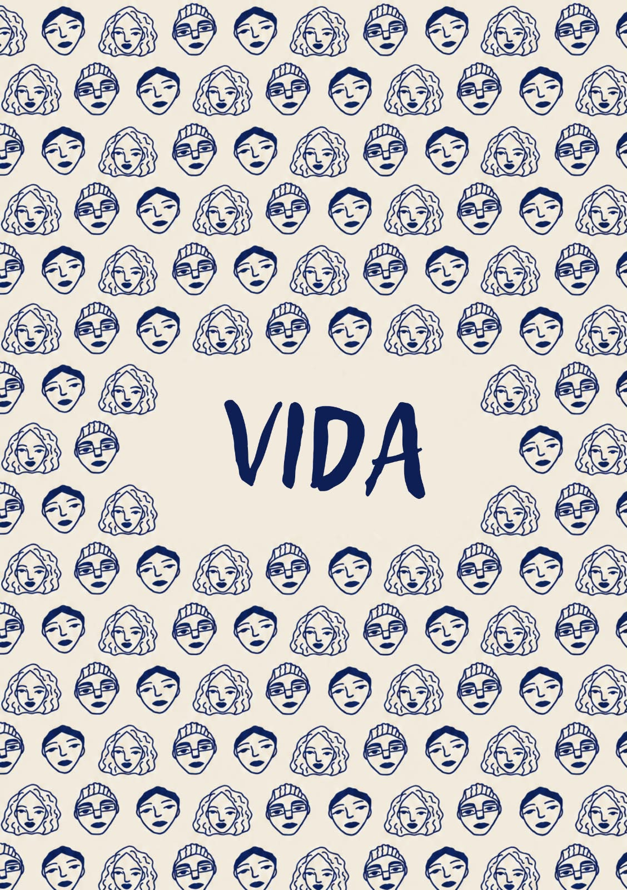

O pulsar do dia a dia, o afeto singelo do cafezinho com pão de queijo, as memórias maternas, a caminhada pelos corredores universitários e o sentimento de pertencer a uma terra rica e plural.
Poemas em destaque:
- Aquele cafezinho — Melquisedeque Silva
- Poesia maternal — Melquisedeque Silva
- Um Eu Te Amo — Kaylane Pereira
- Chuva universitária — Andreza Costa
- Somos muitos em Pindorama — Melquisedeque Silva